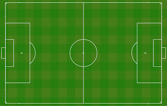

El terreno de juego debe medir de largo entre 90 y 120 metros (100 y 110 metros para partidos internacionales). Mientras que el tamaño del ancho tiene que estar entre 45 y 90 metros (64 y 75 metros para partidos internacionales).
Desde sus inicios el juego se ha iniciado con un saque desde el centro del terreno, el cual no ha sufrido modificaciones hasta la actualidad. En un principio la duración de los encuentros no estaba fijada, aunque ya desde 1866 el tiempo de 90 minutos comenzaba a ser un estándar. En 1897 esto se hizo oficial y además se definió que el entretiempo no debía superar los 5 minutos. Para 1995 el tiempo de descanso aumentó a un máximo de 15 minutos para adaptarse a las exigencias actuales.
Desde sus inicios el número de jugadores por equipo se solía definir entre los capitanes, y no era normal que se disputaran encuentros con un número desigual de futbolistas por bando. En 1897 el número de 11 por equipo se hizo obligatorio para todos los partidos oficiales. Durante los años 1960 los cambios de jugadores durante los partidos fueron gradualmente aceptados, aunque con constantes modificaciones y restricciones. En 1994 se permitió un cambio más a los dos ya permitidos, aunque uno de los mismos estaba destinado únicamente al guardameta. Finalmente en 1995 las tres sustituciones permitidas se abrieron a cualquier tipo de jugador.